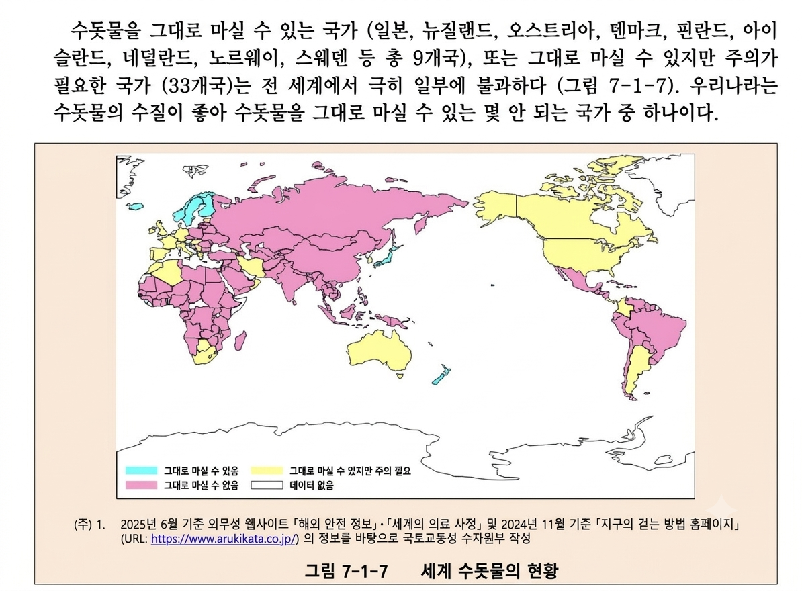
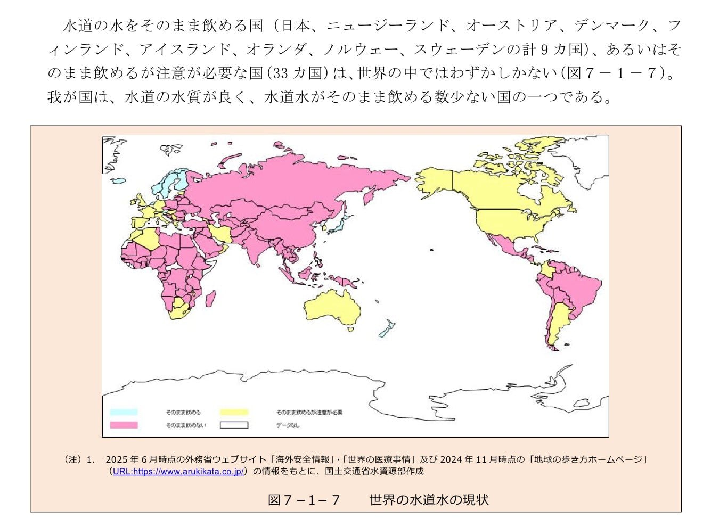

수돗물 탈아입구 성공한 일본


수돗물 탈아입구 성공한 일본

항상 말하지만 배관 상태는 아무도 모른다 ㅋㅋㅋㅋ 바퀴벌레가 지나가고있을수도 있다고
그 바퀴벌레 대단하네 ㅋㅋ 수도관을ㅋㅋ
급수관은 이미 물로 가득차있는데 어캐 바퀴벌레가 지나감 ㅋㅋ 에어껴도 에어벤트가 빼줄건데
근데 어지간한 선진국들 개도국들 배관 다 씹창 나지 않나?
어느나라든 수도관 자체가 더러울거같은데
일본도 옛날말이지 지금은 수돗물 안먹고 존나 사먹음 괜히 이로하스랑 천연수가 인기있는게 아니지 ㅋㅋㅋ
나 총각일때 혼자 살면서 그냥 수돗물 마셨는데 아무탈 없었음 ....
배관상태는 일본이 더 씹창임
저긴 도시계획을 100년전에 다 끝내놔서
우리나라도 신청하면 수질검사해주거든(공짜)
그거 음용가능여부도 검사해줘 심심해서 신청해봤는데
중후한 아저씨 두분 오셔서 싱크대 물좀틀어놓으시더니 받아간다음 좀지나니까 우편 오더라
일본은 배관 몇년마다 바꾸길래 ㅋㅋ 얼탱이가 없네
상수도관 메인은 40년 각건물은 2~30년
우리나라랑 크게 차이없는듯?
싱크대 필터 달아보면 알잖아 기겁할껄 이물질 모래 엄청 낌 괜히 라면물 수돗물 생수 나온게 아님
그거 뜨순물일때 나오는거자너 보일라 돌아갖고
맞아 전에 뜨거운물 틀면 필터에 모레 같은거 끼고 찬물은 안끼던데 이유가 뭐야??
필터과정은 믿는데 배관을 전혀 못믿겠음
한국 수자원 관리는 존나 좋거든.
수도관이 썩창인 집에서 자라왔으면 생수파 되는거고,
수도관 멀쩡한 집에서 자라왔으면 요리할때도 수돗물 거부감 없는거고.
우리나라 데이터 없다는데?
아재요.. 눈을 크게 뜨세요
쟤한테 그 나라가 쟤네나라임
그래도 꽤 있네
몇군데 없을줄 알았는데
일본을 유럽과 묶어놓은 자료는 항상 의심할것
한국이 평균 수돗물 더 깨끗할텐데 ㅋㅋㅋㅋㅋㅋ
음침하게 한국 뺐네
ㅈㄹ ㅋㅋ 아파트민국을 ㅈ으로 보나 너네들 아파트공고문 보면 알거임 매분기 수질검사하고 저수조 탱크 청소하고
심지어 관할 청에 신청하면 우리집 수돗물 안심확인제라고 무료로 수질검사 신청도 가능하니 안심해도 된다.
일본이라서 이건 국뽕 한 95프로 들어있다고 봐야지 우리나라 깨끗한나라 우리나라만한 청정 나라는 이 세상에 노르웨이나 아이슬란드 뉴질랜드 같은 곳 밖에 없다 (평소 본인들이 깨끗함의 이상향으로 여기던곳)
삿포로 정도 아니고서는 딱히 한국보다 그렇게 까지 엄청 특별하다고 보기 어려울텐데
근데 한국 강물 생각하면 도시들이 모여있는 중하류가면... 화학처리 존나게 안하고서는 마시기 참 어렵다
어느 날부터 세면대에서 찬물이 안 나와서 수전 뜯어보니 녹으로 막혀있더라
20년된 아파트인데.. 당황함
신청도 안했는데 수질검사 나와서
했더니 괜찮길래 물 받아서 뚜껑 살짝 덮고
하루이상 냅두면 수돗물 냄새 날아가길래
그거 그냥 마심
진짜 오만하네 ㅋㅋㅋ
(대충 일본 택시 자동문 콘)